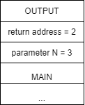
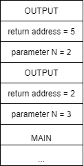
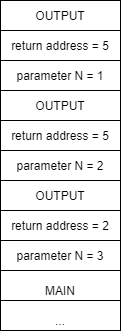
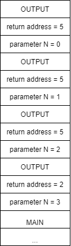

Implementing Recursion
function REVERSE2() (1)
read CHARACTER (2)
if CHARACTER == `*` then (3)
return (4)
else (5)
print CHARACTER (6a)
REVERSE2() (7a)
return (8)
end if (9)
end function (10)The REVERSE2 function in the previous quiz actually prints the characters entered by the user in the same order in which they are typed. Notice how this small variation in the instruction order significantly changed the outcome of the function. To get a better understanding of why this occurs, we will delve into the order of execution in a little more depth.
Head and Tail Recursion
From the output of our original REVERSE function, we could argue that recursive function calls are carried out in a LIFO (last in, first out) order. Conversely, the output of the second version of the function REVERSE2, would lead us to believe that recursive function calls are carried out in FIFO (first in, first out) order. However, the ordering of the output is really based on how we structure our code within the recursive function itself, not the order of execution of the recursive functions.
To produce a LIFO ordering, we use a method called head recursion, which causes the function to make a recursive call first, then calculates the results once the recursive call returns. To produce a FIFO ordering, we use a method called tail recursion, which is when the function makes all of its necessary calculations before making a recursive call. With the REVERSE and REVERSE2 functions, this is simply a matter of swapping lines 6 and 7.
While some functions require the use of either head or tail recursion, many times we have the choice of which one to use. The choice is not necessarily just a matter of style, as we shall see next.
Tracing Program Execution
Before we finish our discussion of head and tail recursion, we need to make sure we understand how a recursive function actually works in the computer. To do this, we will use a new example. Let’s assume we want to print all numbers from 0 to $N$, where $N$ is provided as a parameter. A recursive solution to this problem is shown below.
function OUTPUT(integer N) (1)
if N == 0 then (2)
print N (3)
else (4)
print "Calling to OUTPUT " N-1 (5)
OUTPUT(N-1) (6)
print "Returning from OUTPUT " N-1 (7)
print N (8)
end if (9)
return (10)
end function (11)Notice that we have added some extra print statements (lines 5 and 7) to the function just to help us keep track of when we have called OUTPUT and when that call has returned. This function is very similar to the REVERSE function above, we just don’t have to worry about reading a character each time the function runs. Now, if we call OUTPUT with an initial parameter of 3, we get the following output. We’ve also marked these lines with letters to make the following discussion simpler.
Calling to OUTPUT 2 (a)
Calling to OUTPUT 1 (b)
Calling to OUTPUT 0 (c)
0 (d)
Returning from OUTPUT 0 (e)
1 (f)
Returning from OUTPUT 1 (g)
2 (h)
Returning from OUTPUT 2 (i)
3 (j)Lines a, b, and c show how the function makes all the recursive calls before any output or computation is performed. Thus, this is an example of head recursion which produces a LIFO ordering.
Once we get to the call of OUTPUT(0), the function prints out 0 (line d) and we start the return process. When we return from the call to OUTPUT(0) we immediately print out N, which is 1 and return. We continue this return process from lines g through j and eventually return from the original call to OUTPUT having completed the task.
Looking Under the Covers
Now that we have seen how recursion works in practice, we will pull back the covers and take a quick look at what is going on underneath. To be able to call the same function over and over, we need to be able to store the appropriate data related to each function call to ensure we can treat it as a unique instance of the function. While we do not make copies of the code, we do need to make copies of other data. Specifically, when function A calls function B, we must save the following information:
- the memory address of the current parameters,
- the address of the statement in function
Ato be executed whenBreturns (called the return address), - the address of the memory location that will contain the value returned by the function (the value address), and
- all the local variables of function
B.
We call this information the activation record for function A. When a call to B is made, this information is stored in a stack data structure known as the activation stack, and execution begins at the first instruction in function B. Upon completion of function B, the following steps are performed.
- The return address is read from the activation stack.
- The information stored about function B is removed from the activation stack, leaving the information stored for function A on top of the stack.
- Execution begins at the return address in function A.
Next, we will look at how we use the activation stack to implement recursion. For this we will use a simple MAIN program that calls our simplified OUTPUT function (where we have removed all the print statements used to track our progress).
function MAIN()
OUTPUT(3) (1)
print ("Done") (2)
end function
function OUTPUT(integer N)
if N == 0 then (1)
print N (2)
else (3)
OUTPUT(N-1) (4)
print N (5)
end if (6)
return (7)
end functionWhen we run MAIN, the only record on the activation stack is the record for MAIN. Since it has not been “called” from another function, it does not contain a return address. It also has no local variables, so the record is basically empty as shown below.
However, when we execute line 1 in MAIN, we call the function OUTPUT with a parameter of 3. This causes the creation of a new function activation record with the return address of line 3 in the calling MAIN function and a parameter for N, which is 3. Again, there are no local variables in OUTPUT. The stack activation is shown in figure a below.
| a | b | c | d |
|---|---|---|---|
|  |  |  |  |
Following the execution for OUTPUT, we will eventually make our recursive call to OUTPUT in line 4, which creates a new activation record on the stack as shown above in b. This time, the return address will be line 5 and the parameter N is 2.
Execution of the second instance of OUTPUT will follow the first instance, eventually resulting in another recursive call to OUTPUT and a new activation record as shown in c above. Here the return address is again 5 but now the value of parameter N is 1. Execution of the third instance of OUTPUT yields similar results, giving us another activation record on the stack d with the value of parameter N being 0.
Finally, the execution of the fourth instance of OUTPUT will reach our base case of N == 0. Here we will write 0 in line 2 and then return. This return will cause us to start execution back in the third instance of OUTPUT at the line indicated by the return value, or in this case, 5. The stack activation will now look like e in the figure below.
| e | f | g | h |
|---|---|---|---|
When execution begins in the third instance of OUTPUT at line 5, we again write the current value of N, which is 1, and we then return. We follow this same process, returning to the second instance of OUTPUT, then the first instance of OUTPUT. Once the initial instance of OUTPUT completes, it returns to line 2 in MAIN, where the print("Done") statement is executed and MAIN ends.
Performance
While recursion is a very powerful technique, its expressive power has an associated cost in terms of both time and space. Anytime we call a function, a certain amount of memory space is needed to store information on the activation stack. In addition, the process of calling a function takes extra time since we must store parameter values and the return address, etc. before restarting execution. In the general case, a recursive function will take more time and more memory than a similar function computed using loops.
Recursion Versus Iteration
It is possible to demonstrate that any function with a recursive structure can be transformed into an iterative function that uses loops and vice versa. It is also important to know how to use both mechanisms because there are advantages and disadvantages for both iterative and recursive solutions. While we’ve discussed the fact that loops are typically faster and take less memory than similar recursive solutions, it is also true that recursive solutions are generally more elegant and easier to understand. Recursive functions can also allow us to find solutions to problems that are complex to write using loops.